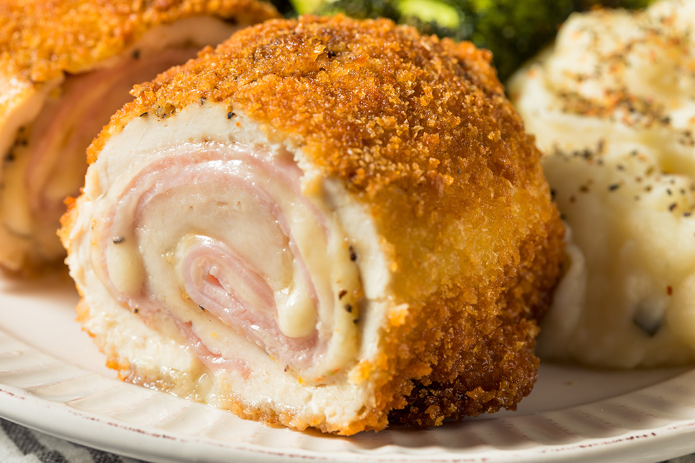
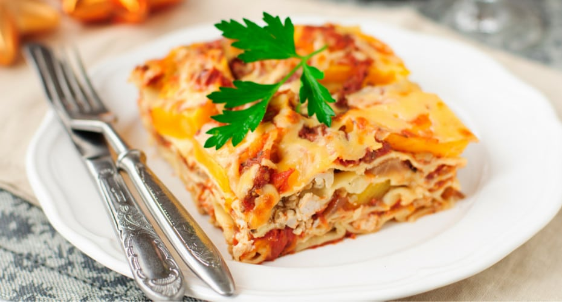

Un blog para descubrir y compartir recetas de cocina que llenen tu estómago y hagan tu corazón feliz.
Actualizamos cada semana con nuevas recetas y consejos de cocina para que disfrutes de la gastronomía en casa.
Recetas
Cordon Bleu de pollo

El Cordon Bleu es una receta de cocina clásica que consiste en pechugas de pollo rellenas de jamón
y queso, empanizadas y fritas.
El Cordon Bleu de pollo es una deliciosa receta de cocina que
consiste en pechugas de pollo rellenas de jamón y queso, empanizadas y fritas hasta obtener un exterior
crujiente y un interior jugoso.
Hoy vamos a aprender a prepararla.
Ingredientes
4 Pechugas de pollo
4 lonchas de jamón
4 rebanadas de queso
100g de pan rallado
100g de harina
2 huevos
Sal y pimienta al gusto
100ml de aceite para freír
Preparación
Para preparar esta receta, sigue estos pasos:
Abre cada pechuga a lo largo, como un libro, sin separarla del todo, y aplánala con un mazo hasta que
quede delgada.
Sazona con sal y pimienta.
Pon una loncha de jamón y una de queso en el centro, cierra la pechuga y sujeta con palillos.
Pasa cada pechuga por harina, luego por huevo y por último por pan rallado, presionando bien.
Fríe en aceite a fuego medio, unos 5 minutos por lado, hasta que esté dorada y bien cocida por dentro.
Escurre sobre papel absorbente, retira los palillos y deja reposar 2 minutos antes de servir.
Tiempo de preparación:
Publicado el
Lasagna

La lasagna es un plato italiano hecho con capas de pasta, carne, queso y salsa.
La lasagna es un plato italiano que consiste en capas de pasta, carne, queso y salsa. Es un plato muy popular
y delicioso que se puede preparar de muchas maneras,
y que puede acompañar muy bien tu comida familiar o una cena especial.
Ingredientes
9 láminas de lasagna
500 g de pechuga de pollo cocida y desmechada
1 cebolla picada
2 dientes de ajo picados
400 g de salsa de tomate
500 ml de salsa blanca (50 g de mantequilla, 50 g de harina y 500 ml de leche)
250 g de queso mozzarella rallado
3 cucharadas de queso parmesano
Sal, pimienta y orégano al gusto
Aceite de oliva
Preparación
Para preparar esta receta, sigue estos pasos:
Sofríe la cebolla y el ajo en aceite de oliva, agrega el pollo desmechado y la salsa de tomate, y cocina
10 minutos con sal, pimienta y orégano.
Prepara la salsa blanca: derrite la mantequilla, mezcla la harina, agrega la leche poco a poco y revuelve
hasta que espese.
Cocina las láminas de lasagna según las instrucciones del empaque y escúrrelas.
Precalienta el horno a 180 °C.
En un molde, arma capas en este orden: salsa blanca, láminas, pollo, mozzarella. Repite hasta terminar y
cubre con salsa blanca, mozzarella y parmesano.
Hornea 30 a 35 minutos, hasta que el queso esté gratinado, y deja reposar 10 minutos antes de cortar.
Tiempo de preparación:
Publicado el
Consejos de cocina
Como siempre, te recordamos los siguientes consejos para cocinar de manera segura y deliciosa:
Lava tus manos antes de comenzar a cocinar.
Almacena los ingredientes en condiciones
adecuadas para evitar la contaminación.
No dejes la comida sin supervisión mientras se cocina.
Utiliza utensilios de cocina adecuados para cada tarea.
No dejes objetos metálicos en el horno.
Mantén el área de cocina limpia y organizada.
Apaga los hornos y electrodomésticos cuando no los estés utilizando.
Lee las instrucciones del fabricante antes de usar cualquier aparato de cocina.